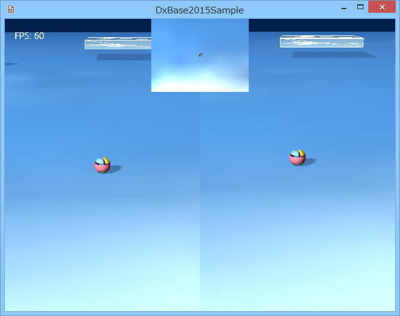

図3003a
左がいつものようにコントローラで操作できる画面、右は固定カメラで、中央上部の小さい画面は、ミニマップ風で真上から見ています。
void GameStage::CreateViews(){
//最初にデフォルトのレンダリングターゲット類を作成する
CreateDefaultRenderTargets();
//マルチビューコンポーネントの取得
auto PtrMultiView = GetComponent<MultiView>();
//マルチビューにビューの追加1
auto PtrView = PtrMultiView->AddView();
//ビューの矩形を設定（ゲームサイズ左半分）
Rect2D<float> rect(0, 0, (float)320, (float)480);
//最初のビューにパラメータの設定
PtrView->ResetParamaters<LookAtCamera, MultiLight>(rect,
Color4(0.0f, 0.125f, 0.3f, 1.0f), 1, 0.2f, 1.0f);
auto PtrCamera = PtrView->GetCamera();
PtrCamera->SetEye(Vector3(0.0f, 2.0f, -5.0f));
PtrCamera->SetAt(Vector3(0.0f, 0.0f, 0.0f));
//マルチビューにビューの追加2
PtrView = PtrMultiView->AddView();
//ビューの矩形を設定（ゲームサイズ右半分）
rect = Rect2D<float>(0, 0, (float)320, (float)480);
rect += Point2D<float>(320.0f, 0);
//2番目のビューにパラメータの設定
PtrView->ResetParamaters<Camera, MultiLight>(rect,
Color4(0.0f, 0.125f, 0.3f, 1.0f), 1, 0.2f, 1.0f);
PtrCamera = PtrView->GetCamera();
PtrCamera->SetEye(Vector3(0.0f, 2.0f, -5.0f));
PtrCamera->SetAt(Vector3(0.0f, 0.0f, 0.0f));
//マルチビューにビューの追加3
PtrView = PtrMultiView->AddView();
//ビューの矩形を設定（ミニマップ風）
rect = Rect2D<float>(0, 0, (float)160, (float)120);
rect += Point2D<float>(240.0f, 0);
//2番目のビューにパラメータの設定
PtrView->ResetParamaters<Camera, MultiLight>(rect,
Color4(0.0f, 0.125f, 0.3f, 1.0f), 1, 0.0f, 0.2f);
PtrCamera = PtrView->GetCamera();
PtrCamera->SetEye(Vector3(0.0f, 10.0f, 0.0f));
PtrCamera->SetAt(Vector3(0.0f, 0.0f, 0.0f));
PtrCamera->SetUp(Vector3(0.0f, 0.0f, 1.0f)); //上から見るのでUpを変える
}
//最初のビューにパラメータの設定
PtrView->ResetParamaters<LookAtCamera, MultiLight>(rect,
Color4(0.0f, 0.125f, 0.3f, 1.0f), 1, 0.2f, 1.0f);